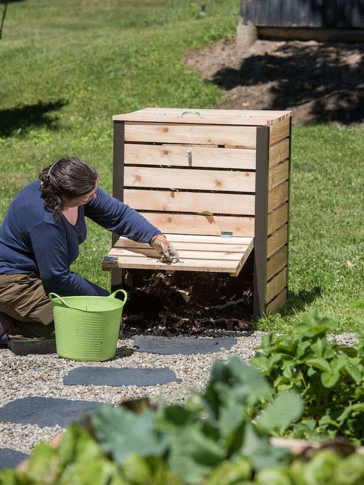

|
Composting is the natural process of recycling organic matter, such as leaves and food scraps, into a valuable fertilizer that can enrich soil and plants. Anything that grows decomposes eventually; composting simply speeds up the process by providing an ideal environment for bacteria, fungi, and other decomposing organisms (such as worms, sowbugs, and nematodes) to do their work. The resulting decomposed matter, which often ends up looking like fertile garden soil, is called compost. Fondly referred to by farmers as “black gold,” compost is rich in nutrients and can be used for gardening, horticulture, and agriculture.
Composting can help lower food waste, the amount of stuff entering the landfill, and improve the soil. It can be a free and easy way to improve the output of your gardens with little to no cost. By using organic waste, it can also lower the total amount of waste your family might produce. Instead of trashing some waste, it can be out in the garden to decompose. Not all kinds of waste will work, but most organic waste will.
|
 |